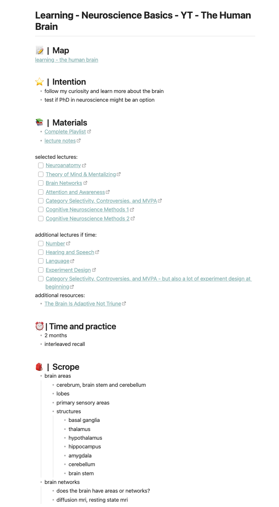

The problem with typical learning plans is that we often make a rigorous plan.
We don’t define why we want to learn or what we want to learn and we don’t
include any practice. This results in randomly learning a bit here and there,
trying to transcribe and cram as much as possible instead of understanding it.
This often leads to giving up on learning altogether.
But there might be an alternative to this standard way of planning. The idea is
based on a project management approach of Basecamp. They use it to build
software. The method is called Shape Up and was developed by Ryan Singer.
Instead of planning, they refer to it as shaping.
LeLe tries to apply some of the insights from Shape Up to learning.
why to shape your learning
Shaping helps your planning have the right level of abstraction, make it
intentional and constrain it.
The right level of abstraction is necessary so that you know what you are going
to learn and, at the same time, leave room for unplanned open questions and
gaps in your understanding. You can’t plan for everything from the start. There
will be surprises. So, making it a bit more abstract will allow you to
adjust - leave something out or include unexpected parts in your learning.
Making it intentional and defining why you want to learn it will boost your
motivation.
Finally, constraining your learning will prevent it from spiralling out of
scope. There are always new concepts and topics to explore or dig deeper into.
This only results in a never-ending story. So, constrain your learning to have
a clear space in which you can learn and explore.
how to shape your learning
Create a new note (note in Obsidian; page in Notion or what it is called in
your tool of choice) and link to it in your respective area note. Then, we are
going to answer the questions of what, why and how in order to plan our new
learning. Additionally, we will research and constrain our learning, too.
To make it intentional, first, write down what you want to learn and why you
want to learn this specific topic.
After that, it is time to give it the right level of abstraction. Research and
collect relevant materials either from your “idle” section in your area note or
research new resources - articles, videos, books.
Then, it is time to explore the materials a bit. Do this by skimming them. You
don’t need to skim all of them, but enough so that you can create a rough
imagined scope of what you are going to learn. It doesn’t have to be detailed.
It shouldn’t be detailed. It should give you an idea and a scope of what you
are trying to learn.
This abstract scoping also helps to test your curiosity to see if you really
want to learn it. If you find it still interesting, great. If it doesn’t seem
interesting after all, it’s also fine. Drop it and try shaping another
learning. At this point, you only invested a bit of research and exploration
time and not weeks of learning.
Next, you have to constrain your learning. What should be part of your learning
scope? And more importantly, what shouldn’t? Constraining prevents learning
from spiralling out of control. Additionally, define how much time you want to
invest in this learning.
Finally, you also have to write down how you want to practice what you learnt.
Do you want to apply your new knowledge to a project (can be done after or
while studying all the content)? Or are you building up knowledge and want to
practice it via interleaved recall and self-testing? (more on practising will
be in the learning section of LeLe.) The main difference between project and
testing is that the project one is more focused on learning a skill, and the
testing one is more focused on learning information.
an example
A shaped learning might look like this:

As you can see, the learning also includes a “map”. This is an Excalidraw
canvas used for mind mapping. But you can link to any kind of mind map you
created with whichever tool you prefer.
This is the basic idea on how to shape a learning. You can even shape multiple
learnings before committing to one. Weigh them against each other and decide
which one you want to focus on. This way, you don’t get distracted by your
vague curiosity for another topic. You don’t question yourself, “Should I have
been learning something else instead?”. After you are done with the learning,
you can always come back to the rest of your shaped learnings and pick the next
one to learn.
You can also make it a cycle of shaping and learning. Shaping learnings for 2
weeks. Picking one and learning for 6 weeks. Or whatever weekly cycle you
prefer. After that, start over. Again, take time to shape learnings, decide
which one you want to focus on and learn.
This makes learning like an experiment. Forgiving if one learning doesn’t pan
out. Full of focus because you intentionally decide what to learn.